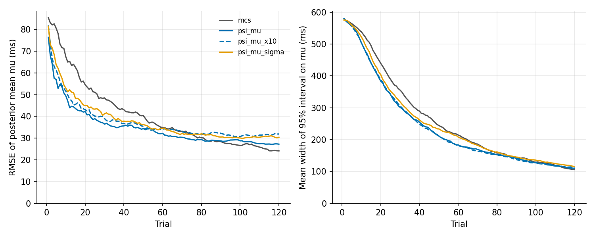

HSD design and validation#
The Heartbeat Synchrony Discrimination task (HSD) is an adaptive Bayesian version of the heartbeat detection task of Brener, Liu and Ring [Brener et al., 1993]. A train of tones is played, each tone a chosen delay after a detected R-wave, and the participant judges whether the tones were synchronous with their heartbeat. After each judgement the next delay is chosen to be as informative as possible about where in the cardiac cycle the sensation lies and how sharp it is.
Note
This is a design document for a task in beta. The estimation engine,
cardioception.HSD.psi, exists and is tested, and its
simulation study has run. The task runner
(cardioception.HSD.parameters and cardioception.HSD.task), its English
instructions and wrappers/hsd_lsl.py exist and run headlessly against a
virtual heart and against a synthetic ECG over LSL. A
hardware dry run, a single 60-trial session on a real
ECG, is recorded below. The task has not been validated in a study; see
what comes next.
Why a new task#
The two-interval task of Whitehead and colleagues [Whitehead et al., 1977] presents stimuli (light flashes in the original) at two fixed delays after the R-wave, usually about 128 and 384 ms, and asks which train is simultaneous with the heartbeat. The design assumes that everyone feels the heartbeat at about the same delay. They do not. In common versions of the task only about one person in four meets the detector criterion [Brener and Ring, 2016], and a person whose sensation falls between the two delays has no correct answer to give.
Multi-interval tasks remove that assumption. Tones are presented at several delays across the cardiac cycle, and each person’s data show where their sensation lies. The cost is time: the standard method of constant stimuli (MCS) takes about 35 minutes. The HSD keeps the multi-interval logic and spends the trials where they are informative.
What the classical task established#
Measuring cardiac interoception already covers what fixed-delay synchrony tasks can establish and why the MCS is a stronger measure of heartbeat timing. This section adds the findings that shaped the HSD design. It follows the review by Brener and Ring [Brener and Ring, 2016].
Study |
Procedure |
Finding |
|---|---|---|
Yates et al. [Yates et al., 1985] |
Six delays, 0 to 500 ms, one light flash per trial |
Only 25 percent met detector criteria, later attributed to a single stimulus per trial giving too little data |
Brener and Kluvitse [Brener and Kluvitse, 1988] |
Participants switched freely among tones at the six delays |
Preferred intervals from 100 to 400 ms; standard deviations of the preferred interval from 43 to 167 ms |
Brener, Liu and Ring [Brener et al., 1993] |
MCS: ten tones per trial at each of the six delays |
54 percent classified as detectors, against 50 percent (Brener-Kluvitse method) and 33 percent (Whitehead variant). Tones at 100 to 300 ms most often judged simultaneous. Median preferred intervals 152 to 373 ms; interquartile ranges 118 to 362 ms |
Brener, Ring and Liu [Brener et al., 1994] |
MCS with fewer tones per trial |
Five tones per trial did not impair reliability |
Ring and Brener [Ring and Brener, 2018] |
MCS at six fixed delays, 48 participants, alongside heartbeat counting |
Each task gave reliable scores; heartbeat detection was unrelated to heartbeat counting |
The standard MCS is 20 trials at each of six delays, 120 trials in all. With a 30-trial exteroceptive familiarization it takes about 35 minutes. It yields two measures: the median of the delays judged simultaneous (the location of the sensation in the cardiac cycle) and their interquartile range (its precision).
Three points carry into the HSD. Location varies between people by hundreds of milliseconds, so it must be estimated rather than assumed. Width varies too, and is a separate quantity from location. And each trial should carry several tones, because one stimulus per trial is too little data.
Two claims we could not verify
Two figures that circulate in summaries of this literature are not used on this page, because we could not open the papers to check them.
Detector rates of 13, 43 and 47 percent for one, five and ten tones per trial, attributed to Brener, Ring and Liu [Brener et al., 1994]. The review confirms only that five tones per trial did not impair reliability relative to ten.
A study by Schneider, Ring and Katkin [Schneider et al., 1998] said to have shifted the delay range from 0 to 500 ms to 100 to 600 ms and found that preferred delays did not move. We cite the paper only as a validity test of the MCS, which is what its title describes.
The design does not depend on either claim.
Relation to the Phase Adjustment Task#
The ECG-based Phase Adjustment Task (PAT-ECG) of Hodgetts and colleagues [Hodgetts et al., 2026] is the closest current method. It descends from the smartphone Phase Adjustment Task [Plans et al., 2021]. In the PAT-ECG, 91 participants completed 28 trials in about 30 minutes, turning a dial until tones felt synchronous with their heartbeat. Consistency of the chosen delays was scored as the mean resultant length and tested against a Monte Carlo null; 16.7 percent were classified as interoceptive. Confidence was rated from 1 to 10 after each trial. The task has an absolute-delay and a relative-delay version, and an exteroceptive control in which a tactor vibrates on the hand.
The two tasks share the trigger (the R-wave), the stimulus (a tone at a delay), the two possible timing axes (milliseconds or cardiac phase) and a confidence rating. An exteroceptive control like the PAT’s is planned for the HSD (roadmap item D). They differ in the psychophysical method.
The tasks overview sets the two side by side.
The Phase Adjustment Task was built for smartphone photoplethysmography, where the participant’s own exploration replaces a controlled stimulus schedule and a consistency score needs no psychometric model. That choice has costs. Adjustment mixes perception with search strategy: a participant can be consistent by always stopping after a similar turn of the dial. It gives no control over which delays are presented. And it cannot separate where the sensation lies from how precise it is. A yes or no judgement at a delay the experimenter chooses is the classical remedy, and Bayesian placement is what makes it short enough to use.
Two ideas from the PAT carry over:
Cardiac phase as an alternative stimulus axis. A delay can be fixed in milliseconds or as a fraction of the interbeat interval. Palmer and colleagues report both delay-based and phase-based responders [Palmer et al., 2026]. The HSD engine works on any real-valued stimulus, so a phase axis needs only a different candidate set and grid.
An exteroceptive version with a known delay. The same procedure applied to a stimulus whose true delay is known validates the whole pipeline, from timing to estimation.
The model#
The probability of a “synchronous” answer at delay \(d\) (ms after the R-wave) is a Gaussian bump on a floor:
Parameter |
Meaning |
Default grid |
|---|---|---|
|
Where in the cardiac cycle the sensation is felt, in ms after the R-wave |
0 to 600 ms in 10 ms steps (61 values) |
|
Width of the sensation, in ms |
20 to 300 ms, log-spaced (20 values) |
|
Rate of “yes” far from the sensation: lapses towards “yes” |
0.03, 0.1, 0.2, 0.35, 0.5, 0.65, 0.8, 0.9, 0.97 |
|
Rate of “yes” at the sensation: one minus the lapse rate towards “no”. Equal to |
The same grid as |
The grids cover the published range of observers with room to spare [Brener and Ring, 2016, Brener and Kluvitse, 1988], because the point of estimating the location is not to assume it. The simulations offer candidate delays from 0 to 600 ms in 20 ms steps and the task runner from 80 to 600 ms. With the 130 ms floor of the current hardware the shortest delay presented is 140 ms, the first candidate above it, and the ceiling of about 0.68 of the heart period allows 600 ms only at periods over 0.89 s (see delay limits). The posterior is discrete on the outer product of the four grids, 98,820 points, of which the 54,900 with the peak at or above the floor carry prior mass; one stimulus selection takes about 20 ms.
Prior. Uniform over mu by default, or any non-negative weights over the
mu grid. Uniform over the sigma grid points, which is log-uniform because
the grid is log-spaced. Uniform over the 45 pairs of floor and peak with
the peak at or above the floor, and zero mass where it would lie below (an
inverted envelope). The 9 pairs with the peak equal to the floor, the flat
responders, carry 0.2 of the prior.
A non-detector answers “yes” at a rate that does not depend on delay. In the model that is a flat envelope, a peak equal to the floor. The floor and the peak share one grid, so a flat envelope is on it at every rate from 0.03 to 0.97: someone who answers “yes” almost always, or almost never, is expressible as flat and does not have to be explained as a rise.
The detection evidence is the posterior mass on an envelope that rises by more
than 0.2 inside the range of delays presented so far: the largest minus the
smallest P(yes) over that range, not peak - floor. A bump whose mu lies
outside what the task can present, with a flank that does not reach into it,
therefore counts as flat, and so does a sigma so wide that the envelope
barely changes across the range. Before two different delays have been
presented the range is that of the candidates. The prior on a rise is about
0.47 over 140 to 500 ms and 0.55 over the 80 to 600 ms of the candidates,
so the design reports the evidence alongside its prior as a Bayes factor
(posterior odds over prior odds). It is a sanity check, reported and never
used to classify people as detectors.
An earlier version had a floor grid of 0 to 0.4 and a peak grid of 0.5 to
0.97. It could express a flat responder only at rates of about 0.3 to 0.6, and
explained any other non-detector as a rise. In 60 trials of the task’s
configuration (bounds 130 to 514 ms, explore 0.1, three seeds), the log10
Bayes factor for detection was:
Responder |
Old grids |
Shared grid, rise inside the range |
|---|---|---|
Always “yes” |
+10.3 |
-4.3 |
Always “no” |
+8.8 |
-2.0 |
Flat 0.9 |
+4.1 to +7.4 |
-1.9 to -0.5 |
Flat 0.1 |
+2.8 to +4.3 |
-1.5 to -1.1 |
Flat 0.5 |
-0.8 to -0.6 |
-0.7 to -0.2 |
Detector, |
+1.6 to +2.5 |
+2.2 to +2.7 |
The biased non-detectors favoured a rise more strongly than the detector did.
The estimate of mu for a detector was not affected.
Estimates and the stopping rule. While a flat envelope keeps posterior
mass, mu is unidentified under it, and the marginal posterior of mu is a
mixture with a uniform spread over the grid: its interval stays wide however
well the location of a rise is known. So mu and sigma (mean, median and
credible interval) are estimated from the posterior conditioned on a rise of
more than 0.2 across the delays presented, the event of the detection
evidence, renormalized: where and how wide the sensation is, given that there
is one. floor and peak stay marginal, and the detection evidence says how
much the posterior believes in a rise at all. The stopping rule uses the
conditional interval of mu. If the posterior mass on a rise falls below
0.01 the estimates fall back to the marginal posterior, and the MuConditional
column of final.txt is False. The next delay is still chosen to minimize the
expected entropy of the marginal mu, flat mass included: that entropy falls
both when the location sharpens and when the question of a rise is settled, so
the trials keep serving the detection evidence too, and the placement, and
therefore the Bayes factors above, are those of the simulations. With the
task’s configuration at a 0.6 s period, a sharp observer (mu 250 ms,
sigma 40 ms) reaches a conditional interval of 70 to 170 ms in 12 trials
(three seeds), against a marginal one of 160 to 420 ms. The simulation tables below report the marginal estimate of
mu; their rerun with the conditional one is pending with the cluster runs.
Choosing the next delay#
Objective. Each trial presents the candidate delay that minimizes the
expected entropy of the marginal posterior over the target parameters, the
Psi-marginal method [Prins, 2013]. The default target is mu alone;
sigma, floor and peak stay in the posterior as nuisance parameters but
do not steer placement. Naming all four as targets reproduces the joint
objective of the original Psi method [Kontsevich and Tyler, 1999], which also
spends trials on the nuisance parameters.
Why not PsychoPy’s PsiHandler. It assumes a monotonic, cumulative
Gaussian psychometric function, as in the HRD. A synchrony judgement rises
towards the sensation and falls after it, so the function is not monotonic.
The HSD has its own grid posterior for that reason.
The clustering concern. García-Pérez [García-Pérez, 2014] names binary synchrony judgements as a case of a non-monotonic psychometric function. He proposes inward-outward staircases for them and warns that Bayesian placement concentrates trials in too narrow a range for a later fit. The HSD answers that in four ways:
Targeting
mualone samples the two flanks of the bump, where a change inmuchanges the response probability most, rather than one narrow band.An
explorefraction of trials ignores the objective and draws a delay uniformly from the allowed candidates, so the tails stay sampled. The engine default is 0; the planned task default is 0.1, and the simulations vary it.The raw trial history is saved, so any later refit is possible, including one with a different model.
The simulation study measures the distribution of sampled delays directly.
Realized delays and per-trial constraints#
Realized delays. The posterior is updated with the realized delay rather
than the request: the mean over the trial’s tones of the start time the tone
player reports, against the stamped R-wave, with the latency bias below added
back. The likelihood is recomputed from the envelope, so any real-valued delay
can be used, a correction the HRD, built on PsychoPy’s PsiHandler, could not
make. With PsychToolbox audio the reported start is the time the device
scheduled, not a measurement of the sound, so the realized delay differs from
the request only when a tone started late. It is not what the participant
heard. The true delay of each tone, against the R-wave found offline, comes
from the LabRecorder file (bench/pat_dryrun_report.py --markers HSD).
Delay limits. Each trial can restrict the candidates:
Limit |
Set by |
Why |
|---|---|---|
|
The system’s R-to-tone latency |
No tone can be scheduled before the system knows about the R-wave. 130 ms of physical delay on current hardware (below), so 140 ms is the shortest candidate presented |
|
0.75 of the anticipated interbeat interval, less a 10 percent margin: about 0.68 of it on the absolute axis |
Keeps the last tone clear of the next beat. The envelope is periodic in the cardiac cycle and the model ignores that, so delays near the next beat would be misread. 600 ms is allowed only at periods over 0.89 s |
If no candidate lies between the two limits, the engine raises an error rather than presenting a delay outside them.
The latency floor on current hardware. These figures come from measurements on the pat-ecg branch, 2026-11-03, with a PLUX ECG streamed over Lab Streaming Layer to the stimulus PC. They are bench measurements, not a published result.
Stage |
Measured |
|---|---|
Online R detector ( |
14 ms median, 18 ms maximum after the R peak |
Whole chain knows about a beat |
20 ms median, 31 ms at the 95th percentile, after the R-wave |
Tone scheduled with psychtoolbox audio, latency class 1, 50 ms lead |
Lands within 1 ms of the scheduled time (latency class 3 was unusable on that laptop) |
Dry run, tones anchored on the real R-wave |
Within 17 ms of the intended phase at the 95th percentile |
The latency bias. Two delays do not appear in any recording. The PLUX
Bluetooth transport delivers each sample 20 to 40 ms after the hub took it,
and LSL stamps it on arrival, so the stamped R-wave is late. The sound leaves
the speaker some milliseconds after the onset the audio driver reports.
Together these come to a roughly constant 30 to 70 ms, which the PAT dry run
measured. As the PAT task does, the runner subtracts a latency bias,
TaskConfig.latencyBias (50 ms by default), from every tone’s target, so
that the tone reaches the participant at the requested delay after the true
R-wave. A delay measured against the stamped R-wave is then 50 ms short of
the physical one, and the runner adds the bias back before it updates the
posterior. Both values are saved: RealizedDelay against the stamped R-wave,
RealizedCorrected as the engine saw it. Both come from the start time the
player reports, which is the scheduled time, so on the absolute axis
RealizedCorrected equals RequestedDelay unless a tone started late (within
0.3 ms on every trial of the dry run). The phase axis applies the same
subtraction to the target and the same addition to the realized fraction.
The latency floor. A tone for a physical delay d is due at the stamped
R-wave plus d less the 50 ms bias. It can be scheduled only if that is at
least the 50 ms audio lead after the beat is known, which on the bench was up
to 31 ms (95th percentile) after the stamped R-wave. So
and the runner’s floor, TaskConfig.minDelay, is 130 ms. The candidates
still start at 80 ms; the per-trial bounds leave out those under the floor, so
the shortest delay presented is 140 ms.
The hardware dry run measured a longer lag. Among the
beats of a train, the poll that returned a beat came 12 ms (median), 48 ms
(95th percentile) and 63 ms (99th percentile) after its stamped R-wave, and
107 of the session’s 506 beats were polled before their own stamped time,
because the LSL inlet’s dejitter smooths the stamps. With that lag the floor
would be about 150 to 165 ms, and 6 of the dry run’s tones at 140 ms were
skipped because their beat was known too late. minDelay should therefore be
set from the lag a session’s setup actually shows. It is left at 130 ms here.
Shorter delays are possible only by scheduling predictively from the
anticipated interbeat interval (the mean of the last three RR intervals).
That adds the beat-to-beat variability of the heart period to the delay as
jitter, and is not implemented. A sensation earlier than 130 ms can still be
located, but only from the falling side of the envelope.
The simulations run at this 130 ms floor (see results as the task runs). The floor costs accuracy for sensations at 200 ms and earlier.
The latency bias is an estimate. The LabRecorder file remains the ground truth for checking it: with the ECG and the tone markers on one clock, the offline R-waves and the reported onsets show the delay actually delivered, less the speaker.
Stopping rule. The session stops once the 95 percent credible interval on
mu is no wider than ciWidth (100 ms), after at least minTrials (15)
updates, or at maxTrials (60) trials. The values rest on the
simulations as the task runs, with the task’s
method (psi_mu_x10), 130 ms floor, ceiling and lost trains, at the timing
jitter of the test desktop (26 ms) and of the lab PC (6 ms). The trial at
which the median interval width over 150 runs per class first reaches each
value:
Median 95% CI width on |
Clean, 26 ms jitter |
Noisy, 26 ms |
Clean, 6 ms |
Noisy, 6 ms |
|---|---|---|---|---|
150 ms |
37 trials |
Not reached by 120 |
34 trials |
84 trials |
100 ms |
61 trials |
Not reached |
52 trials |
Not reached |
80 ms |
75 trials |
Not reached |
63 trials |
Not reached |
60 ms |
104 trials |
Not reached |
80 trials |
Not reached |
Clean observers have a floor of 0.05 and a peak of 0.95, noisy ones 0.2 and
0.8. Over all 30 detectors the median width reaches 100 ms at trial 89 with
26 ms of jitter and at trial 75 with 6 ms. Width grows with sigma: at 60
trials and 26 ms of jitter the clean medians are 60, 95 and 130 ms for a
sigma of 50, 100 and 150 ms.
The rule applied to every run as the task applies it, where a lost train does
not count towards minTrials:
|
26 ms jitter |
6 ms jitter |
|---|---|---|
RMSE of |
45.5, 34.2, 32.3 ms |
44.6, 30.1, 28.1 ms |
Clean detectors stopping before 60 trials |
55 percent; median stop at 55; RMSE at the stop 24.5 ms |
63 percent; 48; 20.6 ms |
Noisy detectors stopping before 60 trials |
23 percent; RMSE at the stop 43.1 ms |
31 percent; 38.8 ms |
The same with |
37 percent; 41.4 ms |
45 percent; 37.0 ms |
The defaults are kept. Raising maxTrials to 90 would let the median detector
reach the 100 ms interval, but it lowers the RMSE of mu by only 2 ms (34.2 to
32.3 ms, and 30.1 to 28.1 ms), at 50 percent more session time: what remains
is mostly the bias of the 130 ms floor for early sensations and the noise of
the noisy observers, which more trials of the same kind do not remove. A
100 ms width lets about half the clean detectors stop early, at an RMSE of
about 20 to 25 ms. minTrials never binds: at 15 trials the median width is
still 370 to 530 ms. It stays as a guard. The non-detectors run to the maximum
(239 of their 240 runs per jitter level), because the flat part of their
posterior spreads mu over the whole grid.
Trial structure and saved data#
This section describes the task as cardioception.HSD.task runs it. The
HSD page lists the
files a session writes.
Five tones, each at the chosen delay after a detected R-wave.
A “synchronous” or “not synchronous” judgement on the keyboard.
A confidence rating on the existing confidence scale, reusing the HRD’s keyboard rating and
cardioception.scales.ConfidenceScale.
Confidence is recorded alongside the judgement. It is not part of the likelihood and does not affect stimulus placement.
Saved for every trial:
Column group |
Contents |
|---|---|
Stimulus |
Requested delay; realized delay, the trial’s mean (each tone’s is in |
Response |
Decision; response time; confidence |
Online estimates |
Posterior mean, median and credible interval for |
As with the HRD, the online estimates are a monitoring aid. They are not an analysis, and the trial history is what a later model should be fitted to.
Simulation study#
The study asks how many five-beat trials the adaptive procedure needs to
recover mu to within about 20 to 30 ms across realistic observers,
compared with the 120-trial MCS, whether Bayesian placement biases anything,
and whether the detection evidence separates detectors from non-detectors.
It simulates the task as it runs, not an ideal one.
Observers.
Group |
Parameters |
Count |
|---|---|---|
Detectors |
|
30 |
Non-detectors |
Flat “yes” rate of 0.3 or 0.5 |
2 |
Misspecified |
Asymmetric envelope, right tail twice as wide as the left, |
2 |
Biased non-detectors |
Always “yes”, always “no”, flat 0.1, flat 0.9 |
4 |
Methods.
Label |
Method |
|---|---|
MCS |
Six delays from 0 to 500 ms, 20 trials each, random order. Analyzed on the same grid posterior, and with the classical median interval and interquartile range |
|
Psi-marginal, target |
|
The same with |
|
Psi-marginal, target |
The task as it runs. Each simulated participant has a resting heart
period drawn uniformly from 0.8 to 1.1 s, the same for every method. The
adaptive methods present candidates from 140 ms (the first above the 130 ms
floor) up to the task’s ceiling at that period, TaskConfig.bounds, which
is 570 to 784 ms, so the top candidate is 560 or 600 ms. The observer answers at the nominal delay plus Gaussian timing noise,
one draw per trial, while the engine is updated with the nominal delay: 26 ms
SD, the Bluetooth jitter of the ECG stamps on the test desktop, and 6 ms, that
of the lab PC. One draw per trial is pessimistic if the five tones of a train
average out. On 7 percent of trials no train is delivered and the trial gives
no update but still counts, as the dry run lost 4 of its 60 trains (though
those still gave an update). Jitter and lost trains apply to MCS too, which
keeps its published levels from 0 to 500 ms as the classical benchmark,
although 0 ms cannot be realized on current hardware.
Replications. Ten repetitions per observer and method, seeded through the package’s random number generator so every run can be reproduced: 38 observers, 4 methods, 10 repetitions and 120 trials, 1,520 runs per study, with the seeds of the earlier studies for the first 34 observers. Each study took 37 minutes with 28 worker processes on a 32-core machine. The commands are under how to reproduce.
Metrics. Absolute error and root mean squared error of the posterior mean
of mu at each trial count; credible-interval width; coverage of the 95
percent interval; error in sigma; the detection Bayes factor per observer
group; the stopping rule applied to every run; the distribution of sampled
delays, which is the check on clustering.
Outputs. CSVs of per-trial estimates, of summaries by trial count, of detection evidence by group and of the stopping rule, a figure of RMSE and credible-interval width against trial count by method, and a table at 15, 20, 30, 40, 60 and 120 trials. The simulation script regenerates all of them.
Results as the task runs#
Error and interval width are over the 30 detectors (300 runs per method) unless stated otherwise.

RMSE of the posterior mean of mu (left) and mean width of its 95 percent
credible interval (right) against trial count, by method, for the 30 detectors,
as the task runs with 26 ms of timing jitter.#
|
15 |
20 |
30 |
40 |
60 |
120 |
|---|---|---|---|---|---|---|
MCS, 26 ms jitter |
62.6 |
54.6 |
48.5 |
43.0 |
34.9 |
24.1 |
|
43.6 |
42.2 |
36.5 |
35.6 |
32.2 |
27.2 |
|
45.5 |
43.1 |
39.0 |
36.8 |
34.2 |
31.9 |
|
48.2 |
44.9 |
41.2 |
37.8 |
34.5 |
30.4 |
MCS, 6 ms jitter |
65.1 |
57.5 |
48.2 |
40.9 |
33.8 |
23.6 |
|
41.7 |
39.7 |
35.7 |
32.7 |
28.0 |
26.1 |
|
44.6 |
39.1 |
35.2 |
32.9 |
30.1 |
26.8 |
|
43.0 |
38.8 |
35.3 |
33.0 |
31.8 |
27.7 |
Median absolute error, |
26.4 |
26.9 |
23.4 |
22.1 |
16.3 |
12.6 |
Median absolute error, |
24.1 |
23.2 |
19.6 |
17.2 |
14.6 |
9.8 |
Bias, |
-4.6 |
-8.2 |
-11.6 |
-11.4 |
-12.2 |
-11.3 |
Mean CI width, MCS, 26 ms |
495 |
439 |
355 |
290 |
214 |
106 |
Mean CI width, |
440 |
388 |
305 |
248 |
181 |
112 |
Mean CI width, |
420 |
367 |
287 |
234 |
163 |
95 |
Accuracy of mu. The adaptive methods have a lower RMSE than MCS up to
about trial 60 to 80, depending on the method and the jitter; by 120 trials
MCS is the most accurate (24 ms against 27 to 32 ms), because its levels are
not held to the floor. Inside the task’s 60 trials the gain over MCS is
largest early: 45 against 63 ms at 15 trials and 39 against 49 ms at 30 (26 ms
of jitter). The median absolute error of psi_mu_x10 is within the 20 to
30 ms target from 15 trials, and below 20 ms from about 40 trials with 6 ms of
jitter and 60 with 26 ms. Exploration changes the RMSE by at most 3 ms within
60 trials, and costs 5 ms at 120 trials with 26 ms of jitter. Jitter of 26 rather than 6 ms costs about 4 ms of RMSE at
60 trials (34.2 against 30.1 ms for psi_mu_x10) and widens the interval by
about 20 ms. On the same MCS data the classical median interval has an RMSE of
38 ms at 120 trials against 24 ms for the grid posterior.
Where the error is. As in the floor-only runs, it sits in early
sensations, whose rising flank lies below the 130 ms floor. psi_mu_x10 at
120 trials:
True |
150 ms |
200 ms |
250 ms |
300 ms |
350 ms |
|---|---|---|---|---|---|
RMSE (ms), 26 ms jitter |
38.4 |
44.4 |
30.6 |
14.6 |
22.1 |
RMSE (ms), 6 ms jitter |
36.5 |
30.5 |
28.9 |
17.3 |
14.3 |
Bias (ms), 26 ms jitter |
-26.5 |
-17.0 |
-7.2 |
-2.3 |
-3.7 |
Bias (ms), 6 ms jitter |
-24.5 |
-7.2 |
-9.3 |
+0.5 |
+0.2 |
The bias of about -11 ms over all detectors is this: the falling flank alone
is consistent with an earlier mu, which pulls the posterior mean down.
Lowering the floor is worth real accuracy for those observers, which is the
case for roadmap items C1 to C3 under what comes next.
Calibration. Coverage of the 95 percent interval lies between 0.96 and
1.00 for every method at every trial count from 15, so the intervals are
honest, if conservative. Error in sigma hardly improves under the adaptive
methods (about 36 ms at 15 trials to 32 ms at 120 with 26 ms of jitter, 27 ms
with 6 ms); MCS reaches 21 to 24 ms. The two asymmetric observers (20 runs per
method) have a mu RMSE of 42 (26 ms) and 33 ms (6 ms) at 120 trials under
psi_mu_x10, the cost of the Gaussian assumption when the envelope is skewed.
Detection evidence#
The median log10 Bayes factor for detection, under psi_mu_x10 with 26 ms of
jitter, and the share of runs above 0 (the data favouring a rise):
Group |
30 trials |
60 trials |
120 trials |
Share above 0 at 60 trials |
|---|---|---|---|---|
Clean detectors |
+1.45 |
+2.27 |
+3.71 |
1.00 |
Noisy detectors |
+0.67 |
+1.36 |
+2.00 |
0.91 |
Asymmetric |
+0.95 |
+1.41 |
+2.03 |
1.00 |
Always “yes” |
-2.52 |
-3.97 |
-6.04 |
0 |
Always “no” |
-1.17 |
-1.85 |
-2.85 |
0 |
Flat 0.1 |
-0.45 |
-0.90 |
-1.38 |
0 |
Flat 0.9 |
-0.68 |
-1.11 |
-1.61 |
0 |
Flat 0.3 |
-0.11 |
-0.20 |
-0.69 |
0.2 |
Flat 0.5 |
-0.00 |
-0.45 |
-0.69 |
0.3 |
With 6 ms of jitter the detectors’ medians are a little higher (clean +2.54,
noisy +1.49 at 60 trials); the non-detectors’ answers do not depend on the
delay, so jitter does not change them. psi_mu and psi_mu_sigma are within
about 0.4 of psi_mu_x10 at 60 trials. MCS gives detectors larger factors
from about 40 trials (clean +3.02 at 60), since its fixed levels sample both
flanks and the far tail.
The Bayes factor now favours a rise for every detector group and a flat envelope for every non-detector group, the biased ones included, and it moves further with more trials in both directions. A biased non-detector is the clearest case: answering almost always “yes” or “no” puts the evidence firmly against a rise, where the old grids took it as strong evidence for one. The hard cases are non-detectors near the middle of the scale, 0.3 and 0.5, whose evidence moves slowly and is still above 0 in 2 or 3 of 10 runs at 60 trials, and noisy detectors, of which 9 percent are still at or below 0 then. So the evidence separates the groups on average but not every person within 60 trials, which is why it is reported as a sanity check and not used as a classifier.
Clustering. Bayesian placement did not concentrate trials in a narrow
band. Under psi_mu_x10 with 26 ms of jitter, 16 of the 24 candidate delays
from 140 to 600 ms each receive at least 2 percent of trials, with 4 to 7
percent per delay between 180 and 340 ms. The one concentration is at the
floor: 21 percent of trials at 140 ms, from 33 percent for observers with a
mu of 150 ms to 8 percent for a mu of 350 ms. For early sensations the
floor cuts off the rising side of the envelope, so the lowest allowed delay is
the most informative one left. The longest delays, 520 to 600 ms, receive
7 percent of trials.
Earlier runs without jitter or ceiling#
The first studies delivered every delay exactly, had no ceiling and lost no
trains, and used the old floor and peak grids. One ran 7 methods at an 80 ms
floor (2,380 runs), the other 4 methods at the 130 ms floor (1,360 runs). With
exact delivery, psi_mu reached a mu RMSE of 25 ms at 60 trials and 17 ms at
120 with the 80 ms floor, against 29 and 26 ms with the 130 ms floor, where a
bias of about -10 ms appeared. The runs above add the ceiling, the jitter and
the lost trains, and the new grids; the 6 ms run is close to the old 130 ms one
(psi_mu_x10 30.1 against 30.3 ms at 60 trials), while the intervals are wider
(163 against 142 ms for psi_mu_x10 at 60), because a flat envelope keeps some
posterior mass spread over every mu. The earlier runs also reported that the
detection evidence “moves in the right direction for both groups”; with the
old grids that held only for the flat 0.3 and 0.5 responders they tested.
A control with the new grids and exact delivery at the 130 ms floor, no jitter, no ceiling and no lost trains, is pending. It would separate the effect of the new grids from that of the realistic delivery, and will be run on the cluster.
How to reproduce#
From the repository root, at the commit that added these results, with the study seed 2026. The first two are the runs reported above; the third is the pending control.
python -m cardioception.HSD.simulate --out <dir>/jitter26 --reps 10 --processes 28 --trials 120 --seed 2026 --min-delay 130 --jitter-sd 26 --train-loss 0.07 --period 0.8 1.1 --methods mcs psi_mu psi_mu_x10 psi_mu_sigma
python -m cardioception.HSD.simulate --out <dir>/jitter6 --reps 10 --processes 28 --trials 120 --seed 2026 --min-delay 130 --jitter-sd 6 --train-loss 0.07 --period 0.8 1.1 --methods mcs psi_mu psi_mu_x10 psi_mu_sigma
python -m cardioception.HSD.simulate --out <dir>/exact130 --reps 10 --processes 28 --trials 120 --seed 2026 --min-delay 130 --jitter-sd 0 --train-loss 0 --no-ceiling --methods mcs psi_mu psi_mu_x10 psi_mu_sigma
Each writes trials.csv, summary.csv, evidence.csv, stopping.csv,
delays.csv, figure.png and table.md. The figure on this page is the
figure.png of the first. The run seeds do not depend on --processes, so a
cluster run with a different worker count reproduces the same runs.
Hardware dry run#
On 2026-11-03 the runner was run for one full session on the test desktop: a
PLUX ECG streamed over Bluetooth into LSL by the PLUX bridge, the wrapper’s
settings (absolute axis, at most 60 trials), and LabRecorder recording the ECG
and the HSD marker stream. The participant wore a tight finger pulse
oximeter throughout, as a positive control, so that there was a clear pulse
sensation to locate. One session on one person checks the pipeline. It says
nothing yet about heartbeat perception.
Check |
Measured |
|---|---|
Session |
60 trials in 7 minutes |
Tones |
290 delivered on the 60 saved trials; 6 skipped because their beat was known too late; 4 trains ended short (one ran out of beats, three reached the ceiling). The player handled 305 tones in all, the 15 of the practice trials included, which are not saved. Every reported start within 1 ms of its schedule |
Online R detector |
Commits a beat 13 ms (median) and 14 ms (95th percentile) after the stamped R-wave |
Beat polled after its stamped R-wave, beats of a train |
12 ms median, 48 ms at the 95th percentile, 63 ms at the 99th; 107 of all 506 beats polled before their stamped time, which the dejitter smooths |
ECG stream |
No dropped samples |
Online beats against offline R-waves from the recording |
Sensitivity 0.996, positive predictive value 1.0 |
Realized delay against the stamped R-wave |
50 ms below the request on every trial, by design (the latency bias). It is taken from the scheduled start, so it checks the bookkeeping, not the sound |
Tone onsets against the offline R-wave |
Interquartile range of 23 ms on the raw LSL timestamps, 44 ms on the dejittered ones |
Bluetooth arrival jitter of the ECG samples |
SD 26 ms on the test desktop, against 6 ms on the stimulus PC |
Every tone’s reported start was within 1 ms of the time it was given. The
reported start is the scheduled one, so this shows that no tone started late,
not when the sound came out; the offline comparison is the check on that. The
scatter against the offline R-wave comes from before the scheduler. The online detector times each R-wave from the timestamps its
samples carry when they arrive, and on that desktop the Bluetooth arrival
times jittered with an SD of 26 ms, against 6 ms on the stimulus PC. Against
the recording’s dejittered timestamps, which are closer to when the hub took
each sample, the tones therefore scattered more widely (44 ms) than against
its raw ones (23 ms). Jitter of this size widens the measured sigma, which is
what roadmap items C2 and C3 address.
![Three panels from the 60-trial dry run. Left, each answer (1 synchronous, 0 not) against the realized delay from 140 to 540 ms, coloured by confidence, with the proportion of synchronous answers per 50 ms bin as squares and the posterior-mean envelope, which rises from a floor of about 0.32 to a peak of about 0.75 near 270 ms. Middle, the posterior mean of mu settles near 270 ms over trials while its 95 percent credible interval narrows from 0 to 600 ms to 150 to 400 ms. Right, the log10 Bayes factor for detection wanders between -0.6 and +0.3 and ends near 0.](../../_images/hsd_dryrun_session.png)
The dry run session. Left: each answer against the realized delay, coloured by
confidence, with the proportion of “synchronous” answers in each 50 ms bin
(squares, sized by the number of trials) and the posterior-mean envelope.
Middle: posterior mean of mu and its 95 percent credible interval after each
trial. Right: log10 Bayes factor for detection after each trial. All three
show the posterior as the session computed it, with the old floor and peak
grids.#
After 60 trials, the session’s maximum, the posterior put mu at 272 ms with
a 95 percent credible interval of 150 to 400 ms, sigma at 98 ms, the floor
at 0.32 and the peak at 0.75. The log10 Bayes factor for detection was about 0.
The interval never came down to the 100 ms stopping width, so the session ran
to its maximum.
Realized delay (ms) |
100 to 150 |
150 to 200 |
200 to 250 |
250 to 300 |
300 to 350 |
350 to 400 |
400 to 450 |
450 to 500 |
500 to 550 |
|---|---|---|---|---|---|---|---|---|---|
P(synchronous) |
0.33 |
none |
0.62 |
0.84 |
0.57 |
0.20 |
0.00 |
0.33 |
0.62 |
Trials |
9 |
0 |
8 |
19 |
7 |
5 |
1 |
3 |
8 |
The answers rise to a clear peak at 250 to 300 ms and fall away by 350 to
400 ms. But the participant also answered “synchronous” on 5 of the 8 trials
at 500 to 550 ms. The model has one bump, so it absorbed those long-delay
answers as a high floor, 0.32, rather than as a second rise. A floor that high
leaves the envelope a rise of only 0.43 from floor to peak, and the posterior
mass on a rise of more than 0.2 stayed at 0.92, the same as its prior on those grids. That is
why the Bayes factor stayed near 1 even though mu was located. Whether the
long-delay answers were heard against the next beat, the periodicity the model
ignores, cannot be told from one session.
Re-analyzed with the shared floor and peak grid and the rise measured over the
delays presented (140 to 540 ms), the same 60 answers give mu at 273 ms but
a credible interval of 40 to 550 ms, sigma at 82 ms, the floor at 0.42 and
the peak at 0.76, a detection evidence of 0.70 against a prior of 0.49, and a
log10 Bayes factor of +0.38. A flat responder answering “synchronous” on about
6 trials in 10 is now on the grid and explains these answers nearly as well as
a rise, so about 0.3 of the posterior stays on an envelope that does not rise,
spread over every mu. The location is the same; the session is weaker evidence for it
than the old interval said.
What comes next#
Phase |
Status |
Content |
|---|---|---|
B. Task runner |
Implemented |
The task, its parameters and configuration, English instructions, an autopilot observer, the train scheduler with both stimulus axes, a headless test on a virtual heart, an LSL test on a synthetic ECG through |
B. Hardware dry run |
Done, 2026-11-03 |
The PLUX-to-LSL bridge installed on the test desktop and 60 trials run on a real ECG in 7 minutes, recorded with LabRecorder. 290 tones were delivered on the 60 trials (6 skipped as late, 4 trains short), every reported start within 1 ms of its schedule, the detector committed 13 ms after each R, no samples were dropped, and the realized delay sat 50 ms below the request by design. Against the offline R-wave the tones scattered with an interquartile range of 23 to 44 ms, because the Bluetooth arrival stamps of the ECG samples jitter (SD 26 ms on that desktop, 6 ms on the stimulus PC). The session put the sensation of a participant wearing a tight finger pulse oximeter at 272 ms, interval 150 to 400 ms. See hardware dry run |
C1. Audio lead and output calibration |
Planned, software only |
Cut the audio scheduling lead from 50 to 20 ms (the bench showed 20 ms still lands within 1 ms) and measure the output offset of the speaker or headphones with the microphone loopback in |
C2. Re-time PLUX samples from the hub’s counter |
Planned, bridge change shared with PAT |
The hub samples at exactly 1000 Hz, so a running fit of its sample counter to the clock in the bridge removes the Bluetooth arrival jitter down to the chunk period, about 10 ms, without touching the constant lag. Jitter is the error that inflates |
C3. Wired ECG into LSL |
Recommended configuration |
Biopac, ADInstruments and Brain Products all have LSL paths. Jitter falls to a millisecond or two, the transport lag to a few milliseconds, and with the shorter lead the floor to about 60 ms. In the earlier exact-delivery simulations an 80 ms rather than a 130 ms floor lowered the RMSE of |
D. Exteroceptive validation |
Not started |
The same adaptive procedure on a tone and vibration (or light) stimulus with a known delay, as a screening condition and as a ground-truth check of the engine |
References#
Full entries for the citations on this page are on the references page.